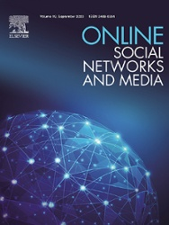
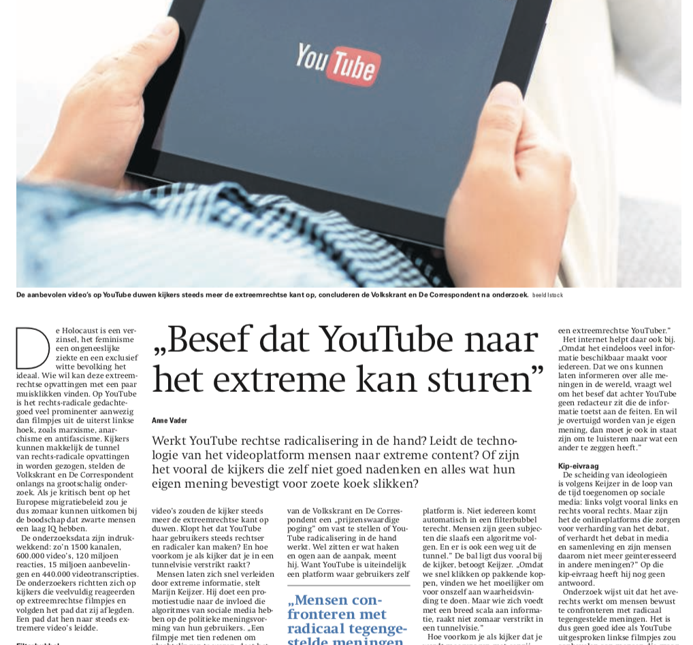
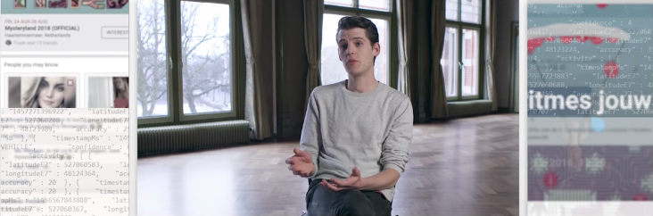
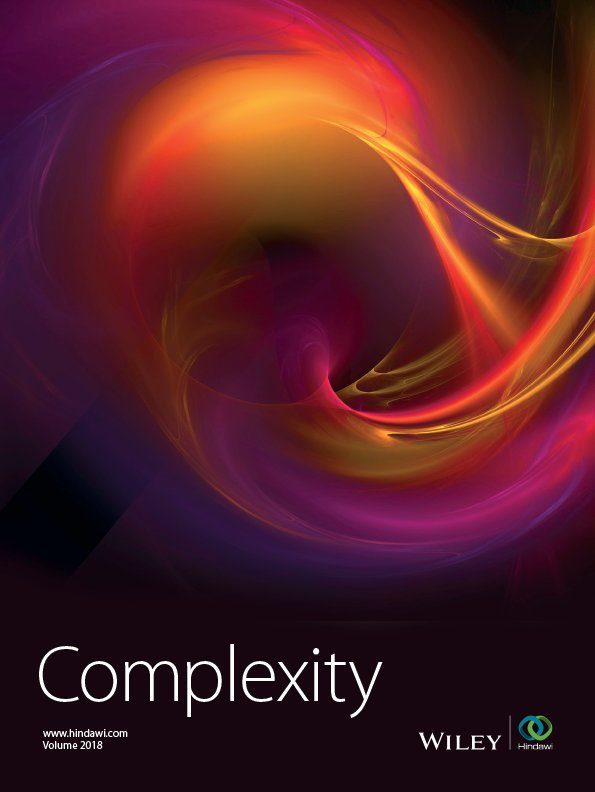

News Archive
April 2021 \\ I’m joining the Chair of Sociology II at the Institute of Technology Futures, Karlsruhe Institute of Technology (ITZ-KIT) as a Postdoctoral Researcher this month. Here, I look forward to continuing my work on (empirical validation of) models for opinion dynamics on the internet together with Professor Michael Mäs.
February 2021 \\ Next month, on March 15 at SocSimFest 2021 (held online), Dieko Bakker, Anton Laukemper and I will be organizing a workshop entitled ‘Social Influence Modeling in Python Using defSim’. In this tutorial, the participants receive a thorough introduction into the software, and hands-on experience with modeling of social influence processes. Upon completion, participants will be able to use defSim in their own research or teaching. If you’re interested in participating in the workshop, visit the website of SocSimFest for more information.

December 2020 \\ How can social bots influence public
debate in online social media? The next issue of Online Social
Networks and Media will feature my paper The Strength of
Weak Bots. In this paper, Michael Mäs and I investigate how social
bots–spreaders of misinformation and falsehoods in online social
media–can most effectively persuade populations of individuals using
insights from the opinion dynamics literature. We show that,
surprisingly, bots that are less well connected and not too active can
be much more effective than you might think. This finding resonates with
empirical findings on the effectiveness of social bots, as the
microblogsphere of social bots seems to stand largely disconnected from
the human spheres, yet appears to be effective at propagating falsehoods
regularly.
[paper]
[code]
 October 2019 \\ I’ve been working on a python package
for agent-based modeling with Anton Laukemper. Our discrete event
framework for social influence models, or defSim, is now
live! The open-source package is freely available on GitHub,
and contributions to the code are welcomed. In the coming months we will
release tutorials on how to use defSim, and information on how to
contribute, so stay tuned.
October 2019 \\ I’ve been working on a python package
for agent-based modeling with Anton Laukemper. Our discrete event
framework for social influence models, or defSim, is now
live! The open-source package is freely available on GitHub,
and contributions to the code are welcomed. In the coming months we will
release tutorials on how to use defSim, and information on how to
contribute, so stay tuned.
May 2019 \\ Next September the European Symposium Series on Societal Challenges in Computational Social Science themed ‘Polarization and Radicalization’ will host our Workshop ‘Validating Models of Opinion Polarization in the Digital Era’. The conference will take place on 2-4 September in Zürich, Switzerland. I submitted the workshop together with Andreas Flache, Jan Lorenz & Michael Mäs. In this workshop we will first discuss the key assumptions within exiting models of opinion dynamics that need to be addressed when we want to understand opinion dynamics on digital communication platforms. Second, we cover methodological challenges and opportunities for empirical validation of theoretical models. Please find the workshop announcement here and the conference website here.
 February 2019 \\ The Reformational Newspaper (Reformatorisch Dagblad) published an interview with me about the challenges of linking increased polarization to personalization algorithms on YouTube in their weekend edition on February 16th. I’m very grateful for the opportunity to engage in this public debate, pointing out some other factors and alternative explanations that may also contribute to extremisation of content and users on the user generated video platform. The online version of the complete article can be found here (Dutch only).
 December 2018 \\ A while ago I was asked to talk about societal implications of communicating via Online Social Media for a short documentary on ‘digital breadcrumbs’. Film maker Matjeu Witte recently uploaded the result to youtube (find it here, Dutch only). Great work, Matjeu!

November 2018 \\ Together with Michael Mäs and Andreas
Flache I published a paper in Complexity entitled ‘Communication in
Online Social Networks Fosters Cultural Isolation’ (link
| pdf).
In the paper we show that a minor change to the interaction rule
traditionally used in Axelrod’s model for the diffusion of culture has
profound impact on the dynamics of cultural evolution. This change is
needed to adapt this well studied model to the context of online
communication. Online actors emit messages to many network contacts at
once (one-to-many) as opposed to the traditional assumption of
one-to-one communication. We prove analytically that isolation and
polarization are more likely in small networks, and use simulation
experiments to study larger networks, cultural identities and varying
topologies.